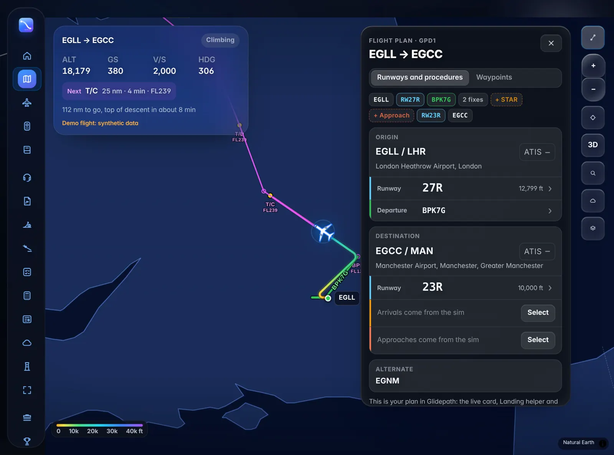
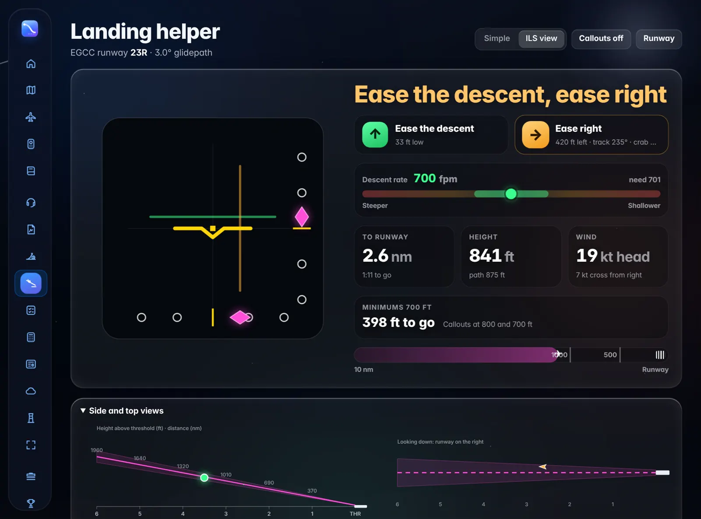
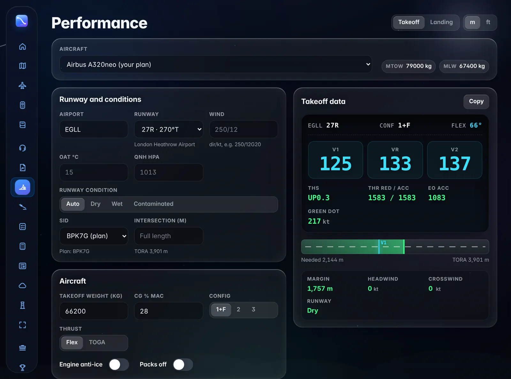
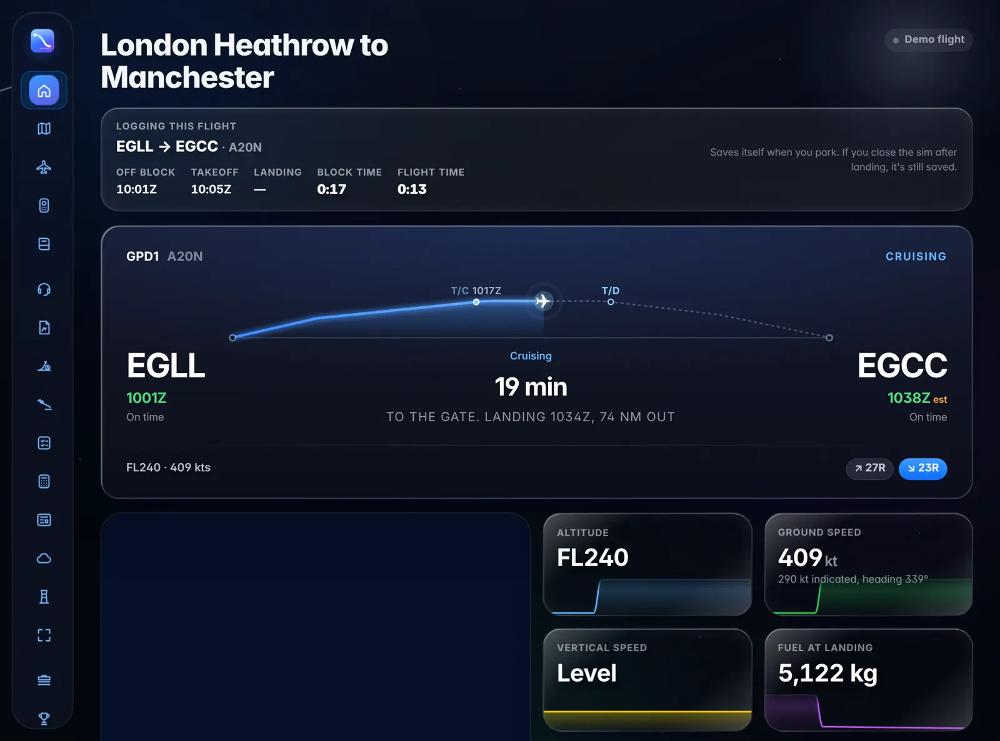
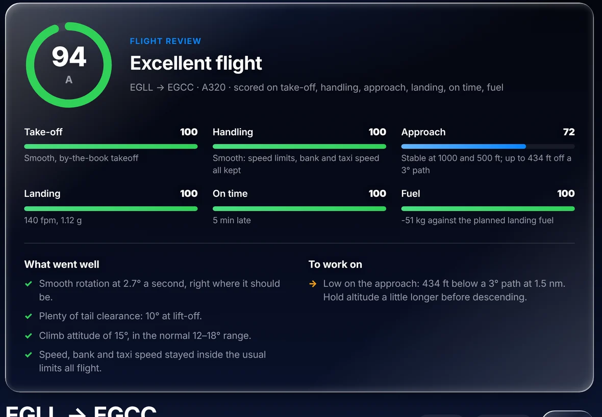
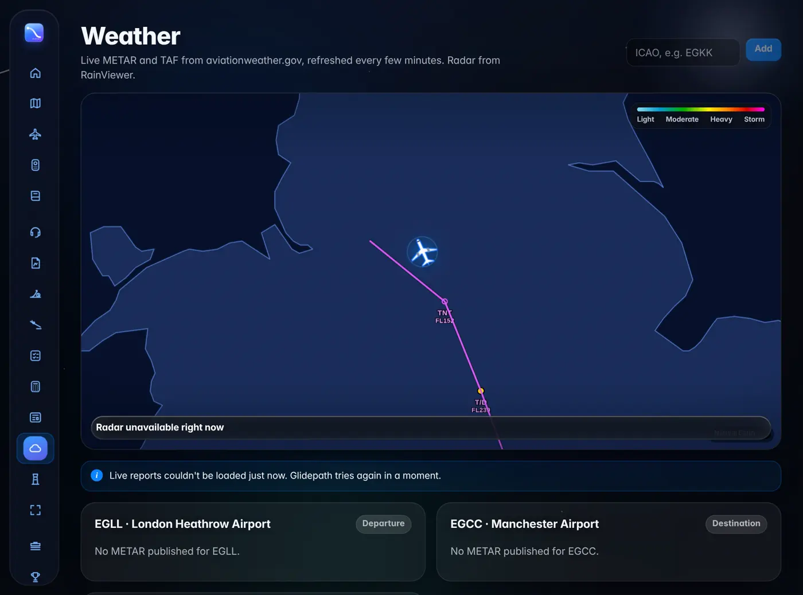
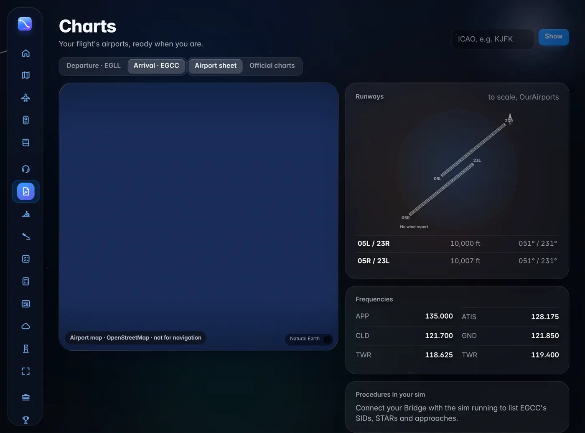
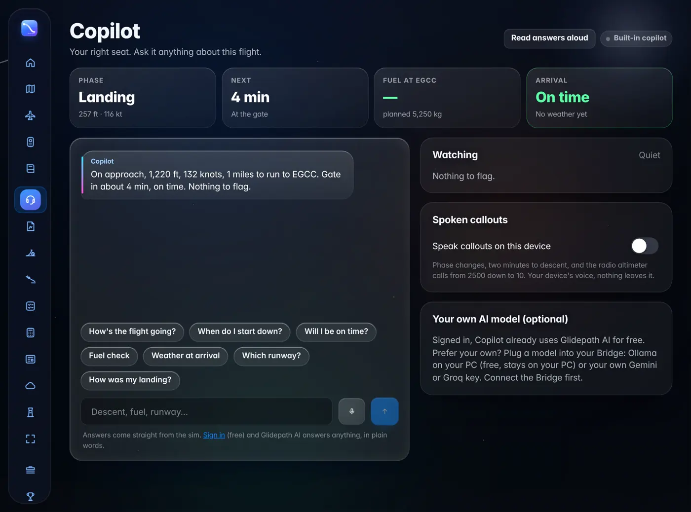
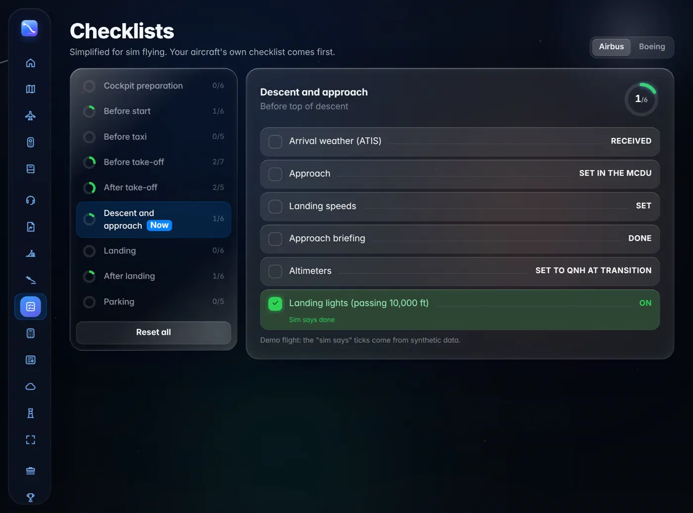
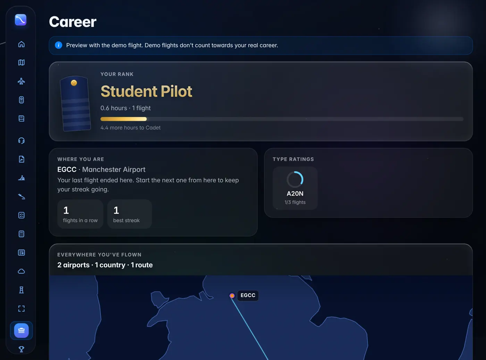

01 · Route
Every waypoint.
Every approach.
Your SimBrief plan on a live map: SID, airways, STAR and the approach you pick, drawn fix by fix to the runway. ATIS letter and weather for both airports.
Microsoft Flight Simulator on your iPad, phone or second screen. Your route, your approach, your aircraft, live, and an honest review after every landing.





01 · Route
Your SimBrief plan on a live map: SID, airways, STAR and the approach you pick, drawn fix by fix to the runway. ATIS letter and weather for both airports.
02 · Landing helper
Too high, too low, left or right, readable from across the room. Callouts to the flare, on any device.
03 · Performance
Takeoff and landing numbers for 40+ aircraft, from your plan's weights and the live METAR.
04 · Remote
Speed, heading, altitude and the AP buttons from your sofa, with the sim's own values beside every knob.
05 · Flight
A real navlog with live ETAs, top of climb and descent, and your aircraft riding the profile at its real altitude.
Try the Landing helper
Low cloud, gusty wind, four miles to run. Keep the dot in the green ring with your mouse, finger or arrow keys. Glidepath grades the approach like it grades yours in the sim.
What is Glidepath?
Glidepath reads your flight straight from Microsoft Flight Simulator. No add-ons in the Community folder, no tabs to juggle.
Off block to on block against your SimBrief times, with a heads-up before every big moment.

Take-off, handling, approach and landing, scored from your real flight.






iPad, phone or a second PC, on any Wi-Fi or mobile data. Add it to your Home Screen and it opens already connected.
Glidepath AI
Copilot reads your live flight and answers in plain words: when to start down, which runway, how to fly this approach. After you park, it coaches you through your review. Stuck on setup? Ask it that too.
Tap one to try it in the app:
Runs on Cloudflare Workers AI. It sees your question and this flight's numbers, not your account. Glidepath doesn't store them.
Set up in two minutes
Run the installer on your sim PC and leave Start Glidepath Bridge now ticked at the end. It finds Microsoft Flight Simulator on its own.
Sign in to your free account on the Bridge page and in the app on your iPad. They connect on any network. No account? On the same Wi-Fi, type the 6-digit code instead.
Recording starts when you push back. When you park, your debrief is waiting.
No plans, no tiers
Elsewhere, remote control, the live camera, connecting over mobile data and premium charts come with a monthly subscription, and some apps only run on an iPhone. Glidepath has no paid version, and it runs on everything.
Roadmap
What is available today, and what comes next.
Live flight on every screen and any network, the logbook and full flight reviews, Glidepath AI, lock screen notifications, remote control and the live camera.
Pick your SID, STAR and approach on the map, drawn fix by fix to the runway, with published holds, ATIS letters and an iPad that reconnects by itself.
An airport diagram and a chart for every SID, STAR and approach at any airport in your sim, with altitudes, speeds, holds, the glidepath table and your baro minimum.
Three new missions every week, a flying streak to keep alive, and your rank on Home, all measured from the flights you really fly.
Bolder liquid glass in day and night, a new icon, and a 3D map: real buildings, airports with their runways, taxiways and names, and your own aircraft in 3D.
Glidepath is built around the people flying it. Tell us what you'd like next, or report anything that isn't right.
Questions
Yes. There is no subscription, no advertising and no paid version, and no feature is locked. Glidepath runs on free services.
Microsoft Flight Simulator 2020 and 2024, on Windows 10 and 11. X-Plane isn't supported yet.
No. Glidepath works on an iPad, an iPhone or Android phone, a second monitor, or a laptop. A tablet next to your screen is the nicest way to use it.
No. Open the app in Safari and add it to your Home Screen; it then opens like any other app. It also works in any browser on Android, Mac and PC.
No. Sign in to your free Glidepath account on the PC (on the Bridge page) and on the iPad, and they connect on any network, even mobile data. On the same Wi-Fi it connects directly, which is a little faster and also opens add-on screens like the Fenix EFB and the GSX remote.
Windows shows that for new apps that aren't code-signed yet (signing costs money every year). Choose More info, then Run anyway. If you want to be sure, check the file's SHA-256 against the one on this page; the code is open on GitHub.
No. The Bridge talks to the sim through SimConnect, which is built into Microsoft Flight Simulator. Nothing is added to the sim.
No noticeable effect. The Bridge reads a handful of values a few times a second, the same way flight-tracking apps do.
Any aircraft for the live data, the logbook and the review. Remote control uses the sim's standard controls: default aircraft respond to all of it; study-level add-ons like PMDG, Fenix and FSLabs run their own systems and may ignore some buttons. Every button tells you whether the sim really changed.
Glidepath tells you when there's a new version, for the app and for the Bridge. Press Update; Windows asks once on the PC to allow it, and the Bridge restarts by itself.
Yes. Glidepath AI, in the Copilot screen, answers questions during a flight (briefings, what to do next, technique) and about Glidepath itself, and coaches you after each review. With a free account it allows 40 questions a day and runs on Cloudflare Workers AI. Without an account, Copilot gives built-in answers from the sim's data. You can also connect your own AI model to the Bridge.
Yes, free. Sign in, then turn on Lock screen notifications in Settings on each device. You'll get top of descent, your landing and your flight review, even with the app closed. On iPhone and iPad (iOS 16.4 or later), add Glidepath to your Home Screen first; Android, Mac and PC work in the browser.
Without an account, everything stays on your own PC and devices. With an account, your flight summaries are stored so your logbook follows you, and Connect anywhere passes your live data through your account's relay without keeping it, and Glidepath AI gets your question and the flight's numbers only to answer it. Delete your account in the app and it's all gone. The privacy policy has the details.

For 64-bit Windows 10 or 11 with Microsoft Flight Simulator 2020 or 2024. Free.
Prefer no installer? Download the zip (its SHA-256). Open source: read the code on GitHub.